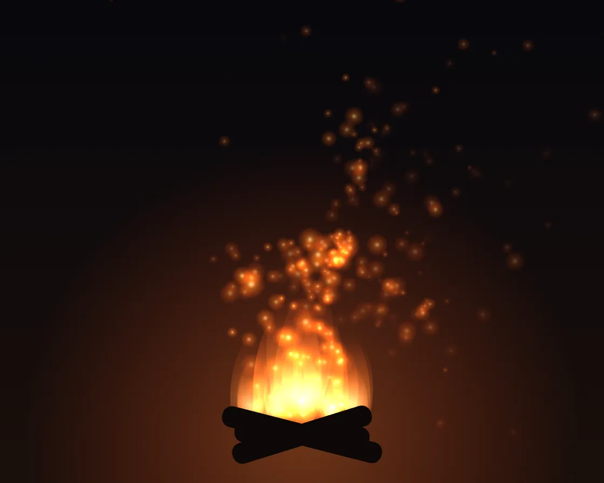

Bonfire embers
Bonfire embers is a Canvas effect: temperature-squared buoyancy swirled by a divergence-free curl field. One plain JavaScript file with no dependencies; add it with npx motion-library add embers.

Open it live, tune it and copy the code
What is Bonfire embers?
Embers rise from a bonfire in curling eddies, twinkling and dimming as they cool.
How does Bonfire embers work?
Lift scales with temperature squared, so hot embers shoot up; the swirl is the curl of layered sines, which is divergence-free, so embers never bunch.
How do I add Bonfire embers to my website?
- In your project folder, run
npx motion-library add embers. It writesanimations/embers.js. Needs Node 18 or newer. - Import it and call it with a container element that has a size:
import fx from './animations/embers.js'; const stop = fx(document.querySelector('#hero')); - Call
stop()to clean up, for example when a component unmounts.
Every setting below is also a flag, so you can install it already tuned: npx motion-library add embers --embers 600.
What settings can I tweak?
| Setting | Flag | Default | Range | Step |
|---|---|---|---|---|
| Embers | --embers | 260 | 60 to 600 | 20 |
| Turbulence | --turbulence | 1 | 0 to 2.5 | 0.05 |
Specifications
- Renderer
- Canvas 2D
- Category
- Flow & particles
- Dependencies
- None
- File size
- 4.7 KB, unminified
- Interactive
- No: it plays on its own
- Reduced motion
- Plays the same for everyone
- Licence
- MIT-0: use it anywhere, no credit needed
Source code
// Bonfire embers: glowing specks lifted by the fire's heat, swirled by turbulence and cooling as they rise. Buoyancy
// fades as they cool, so the hottest ones climb fastest and the dim ones drift and sink. The turbulence is a curl of
// layered sine fields, which never converges, so embers curl into eddies instead of clumping. The fire is a stack of
// flickering soft tongues drawn with additive light.
const PARAMS = { embers: 260, turbulence: 1 };
export default function (stage) {
const canvas = document.createElement('canvas');
canvas.style.cssText = 'position:absolute;inset:0;width:100%;height:100%;display:block';
stage.append(canvas);
const ctx = canvas.getContext('2d');
let W = 0, H = 0;
const resize = () => { const d = Math.min(devicePixelRatio, 2); W = stage.clientWidth || 1; H = stage.clientHeight || 1; canvas.width = W * d; canvas.height = H * d; ctx.setTransform(d, 0, 0, d, 0, 0); };
const ro = new ResizeObserver(resize); ro.observe(stage); resize();
// a stream function made of sines; its curl is a swirling, divergence-free velocity
const psi = (x, y, t) => Math.sin(x * 3.1 + t * 0.7) * Math.cos(y * 2.3 - t * 0.5) + 0.5 * Math.sin(x * 6.7 - y * 5.3 + t * 1.3) + 0.25 * Math.cos(x * 11 + y * 13 - t * 2);
const curl = (x, y, t) => { const e = 0.01; return [(psi(x, y + e, t) - psi(x, y - e, t)) / (2 * e), -(psi(x + e, y, t) - psi(x - e, y, t)) / (2 * e)]; };
const make = () => ({ x: 0.5 + (Math.random() - 0.5) * 0.14, y: 0.86, vx: 0, vy: 0, k: 0.7 + Math.random() * 0.3, cool: 0.12 + Math.random() * 0.2, s: 0.6 + Math.random() * 1.4, ph: Math.random() * 6.28 });
const embers = Array.from({ length: Math.round(PARAMS.embers) }, () => { const e = make(); e.y = Math.random() * 0.86; e.k = Math.random(); return e; });
let raf, last = performance.now();
function frame(now) {
const dt = Math.min(0.033, (now - last) / 1000); last = now;
const t = now / 1000, S = Math.min(W, H), fx = W / 2, fy = H * 0.88;
ctx.globalCompositeOperation = 'source-over';
const bg = ctx.createLinearGradient(0, 0, 0, H); bg.addColorStop(0, '#07070c'); bg.addColorStop(1, '#1a0f0b');
ctx.fillStyle = bg; ctx.fillRect(0, 0, W, H);
ctx.globalCompositeOperation = 'lighter';
// the glow on everything around the fire, breathing with the flames
const fl = 0.85 + Math.sin(t * 7) * 0.05 + Math.sin(t * 13.3) * 0.04;
const glow = ctx.createRadialGradient(fx, fy, 0, fx, fy, S * 0.7 * fl); glow.addColorStop(0, 'rgba(255,120,40,.35)'); glow.addColorStop(1, 'rgba(255,60,10,0)');
ctx.fillStyle = glow; ctx.fillRect(0, 0, W, H);
// flame tongues
for (let i = 0; i < 26; i++) {
const u = (i / 25 - 0.5), hgt = S * (0.16 + 0.12 * (1 - Math.abs(u) * 2)) * (0.7 + 0.3 * Math.sin(t * (5 + i % 5) + i * 1.7));
const x = fx + u * S * 0.22 + Math.sin(t * 3 + i) * S * 0.01, y = fy - hgt * 0.5;
const g = ctx.createRadialGradient(x, y + hgt * 0.25, 0, x, y, hgt * 0.6);
g.addColorStop(0, 'rgba(255,230,160,.30)'); g.addColorStop(0.4, 'rgba(255,130,40,.16)'); g.addColorStop(1, 'rgba(200,40,10,0)');
ctx.fillStyle = g; ctx.beginPath(); ctx.ellipse(x, y, hgt * 0.22, hgt * 0.6, Math.sin(t * 2 + i) * 0.15, 0, 7); ctx.fill();
}
for (const e of embers) {
const [cx, cy] = curl(e.x * 2, e.y * 2, t * 0.6);
const lift = 0.32 * e.k * e.k; // hot air lifts hot embers; cooled ones barely rise
e.vx += (cx * 0.12 * PARAMS.turbulence - e.vx) * dt * 2;
e.vy += ((cy * 0.12 * PARAMS.turbulence - lift + 0.03) - e.vy) * dt * 2;
e.x += e.vx * dt * (H / W); e.y += e.vy * dt;
e.k -= e.cool * dt;
if (e.k <= 0 || e.y < -0.05 || e.y > 0.95 || e.x < -0.05 || e.x > 1.05) Object.assign(e, make());
const x = e.x * W, y = e.y * H, k = Math.max(0, e.k) * (0.8 + 0.2 * Math.sin(t * 20 + e.ph)); // they twinkle
const r = e.s * (1 + k), g = ctx.createRadialGradient(x, y, 0, x, y, r * 4);
g.addColorStop(0, `rgba(255,${180 + k * 70 | 0},${80 + k * 120 | 0},${k})`); g.addColorStop(0.3, `rgba(255,${90 + k * 60 | 0},20,${k * 0.5})`); g.addColorStop(1, 'rgba(255,60,0,0)');
ctx.fillStyle = g; ctx.fillRect(x - r * 4, y - r * 4, r * 8, r * 8);
}
ctx.globalCompositeOperation = 'source-over';
// logs in silhouette
ctx.fillStyle = '#0c0807';
ctx.save(); ctx.translate(fx, fy + S * 0.02);
for (const [ang, len] of [[0.25, 0.34], [-0.3, 0.3], [0.05, 0.28]]) { ctx.save(); ctx.rotate(ang); ctx.beginPath(); ctx.roundRect(-S * len / 2, -S * 0.022, S * len, S * 0.044, S * 0.02); ctx.fill(); ctx.restore(); }
ctx.restore();
raf = requestAnimationFrame(frame);
}
raf = requestAnimationFrame(frame);
return () => { cancelAnimationFrame(raf); ro.disconnect(); canvas.remove(); };
}